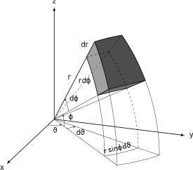

2.1.2 – Coordinate Differentials
This work is regularly relying on vector calculus which includes a substantial use of differentials and derivatives. The former uses two kinds of notations, depending on the use case of the differential. First, mathematical differentials of vectors are the vectorized form of the differentials of the vector components. In the following, the differentials will be set up for stationary conditions with constant base vectors, i.e.
\[\begin{align} \frac{\partial}{\partial t} &= 0, \\ \frac{\partial\hat{\boldsymbol{\mathbf{e}}}_x}{\partial r} &= \frac{\partial\hat{\boldsymbol{\mathbf{e}}}_x}{\partial\vartheta} = \frac{\partial\hat{\boldsymbol{\mathbf{e}}}_x}{\partial\varphi} = \frac{\partial\hat{\boldsymbol{\mathbf{e}}}_y}{\partial r} = \frac{\partial\hat{\boldsymbol{\mathbf{e}}}_y}{\partial\vartheta} = \frac{\partial\hat{\boldsymbol{\mathbf{e}}}_y}{\partial\varphi} = \frac{\partial\hat{\boldsymbol{\mathbf{e}}}_z}{\partial r} = \frac{\partial\hat{\boldsymbol{\mathbf{e}}}_z}{\partial\vartheta} = \frac{\partial\hat{\boldsymbol{\mathbf{e}}}_z}{\partial\varphi} = 0, \\ \frac{\partial\hat{\boldsymbol{\mathbf{e}}}_r}{\partial x} &= \frac{\partial\hat{\boldsymbol{\mathbf{e}}}_r}{\partial y} = \frac{\partial\hat{\boldsymbol{\mathbf{e}}}_r}{\partial z} = \frac{\partial\hat{\boldsymbol{\mathbf{e}}}_\vartheta}{\partial x} = \frac{\partial\hat{\boldsymbol{\mathbf{e}}}_\vartheta}{\partial y} = \frac{\partial\hat{\boldsymbol{\mathbf{e}}}_\vartheta}{\partial z} = \frac{\partial\hat{\boldsymbol{\mathbf{e}}}_\varphi}{\partial x} = \frac{\partial\hat{\boldsymbol{\mathbf{e}}}_\varphi}{\partial y} = \frac{\partial\hat{\boldsymbol{\mathbf{e}}}_\varphi}{\partial z} = 0. \end{align}\]
For example, the differential of a stationary cartesian coordinate vector and cartesian elements is
\[\begin{equation} d\boldsymbol{\mathbf{x}}= \frac{\partial\boldsymbol{\mathbf{x}}}{\partial x}dx+ \frac{\partial\boldsymbol{\mathbf{x}}}{\partial y}dy+ \frac{\partial\boldsymbol{\mathbf{x}}}{\partial z}dz= dx\hat{\boldsymbol{\mathbf{e}}}_x+ dy\hat{\boldsymbol{\mathbf{e}}}_y+ dz\hat{\boldsymbol{\mathbf{e}}}_z= \begin{bmatrix} dx\\ dy\\ dz\end{bmatrix}, \end{equation}\]
and for spherical coordinates and elements
\[\begin{equation} d\boldsymbol{\mathbf{r}}= \frac{\partial\boldsymbol{\mathbf{r}}}{\partial r}dr+ \frac{\partial\boldsymbol{\mathbf{r}}}{\partial\vartheta}d\vartheta+ \frac{\partial\boldsymbol{\mathbf{r}}}{\partial\varphi}d\varphi= dr\hat{\boldsymbol{\mathbf{e}}}_r+ d\vartheta\hat{\boldsymbol{\mathbf{e}}}_\vartheta+ d\varphi\hat{\boldsymbol{\mathbf{e}}}_\varphi= \begin{bmatrix} dr\\ d\vartheta\\ d\varphi\end{bmatrix}. \end{equation}\]
The above total differentials are relatively simple to set up since their respective partial differentials cancel out to only contain one variable each. However, the differentials for the cartesian vector in spherical elements and the spherical vector in cartesian elements are more complicated, with the former differential given by
\[\begin{align} d\boldsymbol{\mathbf{x}}&= \frac{\partial\boldsymbol{\mathbf{x}}}{\partial r}dr+ \frac{\partial\boldsymbol{\mathbf{x}}}{\partial\vartheta}d\vartheta+ \frac{\partial\boldsymbol{\mathbf{x}}}{\partial\varphi}d\varphi\\ &= \left(\cos\vartheta\cos\varphi\hat{\boldsymbol{\mathbf{e}}}_x+ \sin\vartheta\cos\varphi\hat{\boldsymbol{\mathbf{e}}}_y+ \sin\varphi\hat{\boldsymbol{\mathbf{e}}}_z\right) dr\nonumber \\ &+ \left(-r\sin\vartheta\cos\varphi\hat{\boldsymbol{\mathbf{e}}}_x+ r\cos\vartheta\cos\varphi\hat{\boldsymbol{\mathbf{e}}}_y\right) d\vartheta\nonumber \\ &+ \left(-r\cos\vartheta\sin\varphi\hat{\boldsymbol{\mathbf{e}}}_x- r\sin\vartheta\sin\varphi\hat{\boldsymbol{\mathbf{e}}}_y+ r\cos\varphi\hat{\boldsymbol{\mathbf{e}}}_z\right) d\varphi\\ &= \begin{bmatrix} \cos\vartheta\cos\varphi& -r\sin\vartheta\cos\varphi& -r\cos\vartheta\sin\varphi\\ \sin\vartheta\cos\varphi& r\cos\vartheta\cos\varphi& - r\sin\vartheta\sin\varphi\\ \sin\varphi& 0 & r\cos\varphi \end{bmatrix} \begin{bmatrix} dr\\ d\vartheta\\ d\varphi\end{bmatrix} \label{eq:total_cartesian_spherical_differential_matrix}\\ &= \begin{bmatrix} \cos\vartheta\cos\varphi dr-r\sin\vartheta\cos\varphi d\vartheta-r\cos\vartheta\sin\varphi d\varphi\\ \sin\vartheta\cos\varphi dr+ r\cos\vartheta\cos\varphi d\vartheta- r\sin\vartheta\sin\varphi d\varphi\\ \sin\varphi dr+ r\cos\varphi d\varphi \end{bmatrix}. \label{eq:total_cartesian_spherical_differential} \end{align}\]
The resulting vector in Eq. \(\eqref{eq:total_cartesian_spherical_differential}\) contains the scalar differentials of the spherical elements in each of its entries, which can also be pulled out of the vector and written as a linear combination using a matrix notation, shown in Eq. \(\eqref{eq:total_cartesian_spherical_differential_matrix}\). While the differential of a spherical vector in cartesian elements can be calculated in the same way, which is \(d\boldsymbol{\mathbf{r}}= \frac{\partial\boldsymbol{\mathbf{r}}}{\partial x}dx+ \frac{\partial\boldsymbol{\mathbf{r}}}{\partial y}dy+ \frac{\partial\boldsymbol{\mathbf{r}}}{\partial z}dz\), its trigonometric functions and subsequent differentiations make it less common and inefficient to use, which is why it is not shown here for brevity.
These vectorized total differentials are regularly used in vector calculus. A prime example is calculating the gradient \(\nabla\) of a scalar function \(f\), which is given by \[\begin{equation} \frac{df}{d\boldsymbol{\mathbf{x}}} = \nabla f = \begin{bmatrix} \frac{\partial f}{\partial x} \\ \frac{\partial f}{\partial y} \\ \frac{\partial f}{\partial z} \end{bmatrix}, \end{equation}\] as an example in a cartesian coordinate system and with cartesian elements. Many problems feature the second-order derivatives of a scalar function, which is called the Laplacian \(\nabla^2\) and is given by \[\begin{equation} \nabla \cdot \nabla f = \nabla^2 f = \frac{\partial^2 f}{\partial x^2} + \frac{\partial^2 f}{\partial y^2} + \frac{\partial^2 f}{\partial z^2}. \end{equation}\]
Both the gradient and the laplacian can also be expressed in spherical coordinates. The former makes use of the chain rule of differentiation, which evaluates to the inverse matrix of the coordinate projection of Eq. \(\eqref{eq:total_cartesian_spherical_differential_matrix}\): \[\begin{align} \begin{bmatrix} \frac{\partial}{\partial x} \\ \frac{\partial}{\partial y} \\ \frac{\partial}{\partial z} \end{bmatrix} &= \begin{bmatrix} \frac{\partial r}{\partial x} & \frac{\partial\vartheta}{\partial x} & \frac{\partial\varphi}{\partial x} \\ \frac{\partial r}{\partial y} & \frac{\partial\vartheta}{\partial y} & \frac{\partial\varphi}{\partial y} \\ \frac{\partial r}{\partial z} & \frac{\partial\vartheta}{\partial z} & \frac{\partial\varphi}{\partial z} \end{bmatrix}\begin{bmatrix} \frac{\partial}{\partial r} \\ \frac{\partial}{\partial\vartheta} \\ \frac{\partial}{\partial\varphi} \end{bmatrix} \\ &= \begin{bmatrix} \cos\vartheta\cos\varphi& -\frac{\sin\vartheta}{r\cos\varphi} & -\frac{\cos\vartheta\sin\varphi}{r} \\ \sin\vartheta\cos\varphi& \frac{\cos\vartheta}{r\cos\varphi} & -\frac{\sin\vartheta\sin\varphi}{r} \\ \sin\varphi& 0 & \frac{\cos\varphi}{r} \end{bmatrix}\begin{bmatrix} \frac{\partial}{\partial r} \\ \frac{\partial}{\partial\vartheta} \\ \frac{\partial}{\partial\varphi} \end{bmatrix}\\ \Rightarrow\qquad \frac{\partial}{\partial x} &= \cos\vartheta\cos\varphi\frac{\partial}{\partial r} -\frac{\sin\vartheta}{r\cos\varphi} \frac{\partial}{\partial\vartheta} -\frac{\cos\vartheta\sin\varphi}{r} \frac{\partial}{\partial\varphi} \label{eq:spherical_gradient_x}\\ \Rightarrow\qquad \frac{\partial}{\partial y} &= \sin\vartheta\cos\varphi\frac{\partial}{\partial r} + \frac{\cos\vartheta}{r\cos\varphi} \frac{\partial}{\partial\vartheta} -\frac{\sin\vartheta\sin\varphi}{r} \frac{\partial}{\partial\varphi} \label{eq:spherical_gradient_y}\\ \Rightarrow\qquad \frac{\partial}{\partial z} &= \sin\varphi\frac{\partial}{\partial r} + \frac{\cos\varphi}{r} \frac{\partial}{\partial\varphi}. \label{eq:spherical_gradient_z} \end{align}\] The latter can be derived by applying the chain rule twice, which is a tedious but straightforward calculation, leading to: \[\begin{align} \nabla^2 &= \frac{\partial^2}{\partial r^2} + \frac{2}{r}\frac{\partial}{\partial r} + \frac{1}{r^2\cos^2\varphi}\frac{\partial}{\partial\vartheta} + \frac{1}{r^2} \frac{\partial^2}{\partial\varphi^2} - \frac{\sin\varphi}{r^2\cos\varphi} \frac{\partial}{\partial\varphi} \\ &= \frac{1}{r^2}\frac{\partial}{\partial r}\left(r^2\frac{\partial}{\partial r}\right) + \frac{1}{r^2\cos^2\varphi}\frac{\partial}{\partial\vartheta} + \frac{1}{r^2\cos\varphi} \frac{\partial}{\partial\varphi} \left(\cos\varphi\frac{\partial}{\partial\varphi}\right). \label{eq:laplace_spherical} \end{align}\]
The laplacian is the linear summation of the second-order cartesian partial derivative \(\nabla^2 = \frac{\partial^2}{\partial x^2} + \frac{\partial^2}{\partial y^2} + \frac{\partial^2}{\partial z^2}\). The spherical laplacian can be derived by applying the chain rule of partial derivatives, shown in the gradient derivation in Eqs. \(\eqref{eq:spherical_gradient_x}\), \(\eqref{eq:spherical_gradient_y}\), \(\eqref{eq:spherical_gradient_z}\) twice: \[\begin{align*} \frac{\partial^2}{\partial x^2} &= \cos\vartheta\cos\varphi\frac{\partial}{\partial r}\frac{\partial}{\partial x} -\frac{\sin\vartheta}{r\cos\varphi} \frac{\partial}{\partial\vartheta}\frac{\partial}{\partial x} -\frac{\cos\vartheta\sin\varphi}{r} \frac{\partial}{\partial\varphi}\frac{\partial}{\partial x} \\ &= \cos\vartheta\cos\varphi\frac{\partial}{\partial r} \left( \cos\vartheta\cos\varphi\frac{\partial}{\partial r} -\frac{\sin\vartheta}{r\cos\varphi} \frac{\partial}{\partial\vartheta} -\frac{\cos\vartheta\sin\varphi}{r} \frac{\partial}{\partial\varphi}\right) \\ &- \frac{\sin\vartheta}{r\cos\varphi} \frac{\partial}{\partial\vartheta} \left( \cos\vartheta\cos\varphi\frac{\partial}{\partial r} -\frac{\sin\vartheta}{r\cos\varphi} \frac{\partial}{\partial\vartheta} -\frac{\cos\vartheta\sin\varphi}{r} \frac{\partial}{\partial\varphi} \right) \\ &- \frac{\cos\vartheta\sin\varphi}{r} \frac{\partial}{\partial\varphi} \left( \cos\vartheta\cos\varphi\frac{\partial}{\partial r} -\frac{\sin\vartheta}{r\cos\varphi} \frac{\partial}{\partial\vartheta} -\frac{\cos\vartheta\sin\varphi}{r} \frac{\partial}{\partial\varphi} \right) \\ % \frac{\partial^2}{\partial y^2} &= \sin\vartheta\cos\varphi\frac{\partial}{\partial r}\frac{\partial}{\partial y} + \frac{\cos\vartheta}{r\cos\varphi} \frac{\partial}{\partial\vartheta}\frac{\partial}{\partial y} -\frac{\sin\vartheta\sin\varphi}{r} \frac{\partial}{\partial\varphi}\frac{\partial}{\partial y} \\ &= \sin\vartheta\cos\varphi\frac{\partial}{\partial r} \left( \sin\vartheta\cos\varphi\frac{\partial}{\partial r} + \frac{\cos\vartheta}{r\cos\varphi} \frac{\partial}{\partial\vartheta} -\frac{\sin\vartheta\sin\varphi}{r} \frac{\partial}{\partial\varphi} \right) \\ &+ \frac{\cos\vartheta}{r\cos\varphi} \frac{\partial}{\partial\vartheta} \left( \sin\vartheta\cos\varphi\frac{\partial}{\partial r} + \frac{\cos\vartheta}{r\cos\varphi} \frac{\partial}{\partial\vartheta} -\frac{\sin\vartheta\sin\varphi}{r} \frac{\partial}{\partial\varphi} \right) \\ &- \frac{\sin\vartheta\sin\varphi}{r} \frac{\partial}{\partial\varphi} \left( \sin\vartheta\cos\varphi\frac{\partial}{\partial r} + \frac{\cos\vartheta}{r\cos\varphi} \frac{\partial}{\partial\vartheta} -\frac{\sin\vartheta\sin\varphi}{r} \frac{\partial}{\partial\varphi} \right) \\ % \frac{\partial^2}{\partial z^2} &= \sin\varphi\frac{\partial}{\partial r}\frac{\partial}{\partial z} + \frac{\cos\varphi}{r} \frac{\partial}{\partial\varphi}\frac{\partial}{\partial z} \\ &= \sin\varphi\frac{\partial}{\partial r} \left( -\sin\varphi\frac{\partial}{\partial r} + \frac{\cos\varphi}{r} \frac{\partial}{\partial\varphi} \right) + \frac{\cos\varphi}{r} \frac{\partial}{\partial\varphi} \left( -\sin\varphi\frac{\partial}{\partial r} + \frac{\cos\varphi}{r} \frac{\partial}{\partial\varphi} \right). \end{align*}\] Evaluating all partial derivatives and summing up all terms leads to a miraculous cancellation of terms, finally arriving at the following expression of Eq.~(\(\ref{eq:laplace_spherical}\)) for the Laplacian in spherical coordinates: \[\begin{align*} \nabla^2 &= \frac{\partial^2}{\partial r^2} + \frac{2}{r}\frac{\partial}{\partial r} + \frac{1}{r^2\cos^2\varphi}\frac{\partial}{\partial\vartheta} + \frac{1}{r^2} \frac{\partial^2}{\partial\varphi^2} - \frac{\sin\varphi}{r^2\cos\varphi} \frac{\partial}{\partial\varphi} \\ &= \frac{1}{r^2}\frac{\partial}{\partial r}\left(r^2\frac{\partial}{\partial r}\right) + \frac{1}{r^2\cos^2\varphi}\frac{\partial}{\partial\vartheta} + \frac{1}{r^2\cos\varphi} \frac{\partial}{\partial\varphi} \left(\cos\varphi\frac{\partial}{\partial\varphi}\right). \end{align*}\]
Another example of the use of differentials is in integration, where it is used to represent an infinitesimal change in the variable. Shorthand versions of multi-dimensional integrals are often written using vector variables, such as \[\begin{equation} \int_X \int_Y \int_Z f dzdydx= \int_Vf d^3\boldsymbol{\mathbf{x}}, \end{equation}\] where \(V\) is the volume of the integration domain, with the infinitesimal volume element \(d^3\boldsymbol{\mathbf{x}}\in V= \left\{dx\, dy\, dz\; | \; dx\in X, dy\in Y, dz\in Z \right\}\). The superscript \(\bullet^3\) in the differentials indicates that the differential is a vector but a scalar representation of the element’s size created by the vector elements. As before, the differential \(d^3\boldsymbol{\mathbf{x}}\) can also be expressed in spherical elements by using the Jacobian determinant, which is equal to the matrix of Eq.~(\(\ref{eq:total_cartesian_spherical_differential_matrix}\)), of the transformation: \[\begin{equation} d^3\boldsymbol{\mathbf{x}}= \left|\frac{\partial\boldsymbol{\mathbf{x}}}{\partial\boldsymbol{\mathbf{r}}}\right| d^3\boldsymbol{\mathbf{r}}= r^2\cos\varphi drd\vartheta d\varphi. \end{equation}\] Figure 1 illustrates the spherical differential element \(d^3\boldsymbol{\mathbf{r}}\) in a three-dimensional cartesian coordinate system. The azimuth angle \(\vartheta\) rotates inside of the \(x\)–\(y\) plane, while the elevation angle \(\varphi\) rotates the vector out of that plane in \(z\) direction. While the azimuth arc decreases with the sine of the elevation angle, the small angle approximation can be used to approximate the differential element as a cuboid with the volume \(d^3\boldsymbol{\mathbf{r}}\approx r^2 \sin\varphi\, drd\vartheta d\varphi\).

\documentclass[crop,tikz]{standalone}
\usepackage{tikz}
\usetikzlibrary{shapes}
\usetikzlibrary{automata}
\usetikzlibrary{arrows}
\usetikzlibrary{backgrounds}
\usetikzlibrary{calc}
\usetikzlibrary{positioning}
\usetikzlibrary{patterns}
\usetikzlibrary{decorations.pathmorphing}
\usetikzlibrary{decorations.pathreplacing}
\usepackage{tikz-3dplot}
\usepackage[scaled]{helvet}
%\renewcommand{\familydefault}{\sfdefault}
\input{../../../../resources/latex/symbols.qmd}
\begin{document}
%Axis Angles
\tdplotsetmaincoords{70}{110}
%Macros
\pgfmathsetmacro{\rvec}{6}
\pgfmathsetmacro{\elevationvec}{40}
\pgfmathsetmacro{\azimuthvec}{45}
\pgfmathsetmacro{\dazimuthvec}{20}
\pgfmathsetmacro{\delevationvec}{20}
\pgfmathsetmacro{\drvec}{1.5}
%Layers
\pgfdeclarelayer{background}
\pgfdeclarelayer{foreground}
\pgfsetlayers{background, main, foreground}
\begin{tikzpicture}[tdplot_main_coords]
%Coordinates
\coordinate (O) at (0,0,0);
%
\tdplotsetcoord{A}{\rvec}{\elevationvec}{\azimuthvec}
\tdplotsetcoord{B}{\rvec}{\elevationvec + \delevationvec}{\azimuthvec}
\tdplotsetcoord{C}{\rvec}{\elevationvec + \delevationvec}{\azimuthvec + \dazimuthvec}
\tdplotsetcoord{D}{\rvec}{\elevationvec}{\azimuthvec + \dazimuthvec}
%
\tdplotsetcoord{E}{\rvec + \drvec}{\elevationvec}{\azimuthvec}
\tdplotsetcoord{F}{\rvec + \drvec}{\elevationvec + \delevationvec}{\azimuthvec}
\tdplotsetcoord{F'}{\rvec + \drvec}{90}{\azimuthvec}
\tdplotsetcoord{G}{\rvec + \drvec}{\elevationvec + \delevationvec}{\azimuthvec + \dazimuthvec}
\tdplotsetcoord{G'}{\rvec + \drvec}{90}{\azimuthvec + \dazimuthvec}
\tdplotsetcoord{H}{\rvec + \drvec}{\elevationvec}{\azimuthvec + \dazimuthvec}
%%%Nodes
%\node at (A) {A};
%\node at (B) {B};
%\node at (C) {C};
%\node at (D) {D};
%\node at (E) {E};
%\node at (F) {F};
%\node at (G) {G};
%\node at (H) {H};
%Axis
\begin{pgfonlayer}{background}
\draw[thick,-latex] (0,0,0) -- (7,0,0) node[pos=1.1]{$\cartesianCoordinateX$};
\draw[thick,-latex] (0,0,0) -- (0,7,0) node[pos=1.05]{$\cartesianCoordinateY$};
\draw[thick,-latex] (0,0,0) -- (0,0,6) node[pos=1.05]{$\cartesianCoordinateZ$};
\end{pgfonlayer}
%Help Lines
\begin{pgfonlayer}{background}
%Up
\draw[thick, black] (O) -- (A) node[pos=0.6, above left, black] {$\sphericalCoordinateRadius$};
\draw (O) -- (B);
\draw (O) -- (C);
\draw[dashed] (O) -- (D);
%Down
\draw (O) -- (F');
\draw (O) -- (G');
\end{pgfonlayer}
\begin{pgfonlayer}{foreground}
%%Help Curves
\tdplotsetthetaplanecoords{\azimuthvec}
\tdplotdrawarc[tdplot_rotated_coords]{(O)}{\rvec}{\elevationvec+\delevationvec}{90}{}{}
\tdplotdrawarc[tdplot_rotated_coords]{(O)}{\rvec+\drvec}{\elevationvec+\delevationvec}{90}{}{}
\tdplotsetthetaplanecoords{\azimuthvec+\dazimuthvec}
\tdplotdrawarc[tdplot_rotated_coords, dashed]{(O)}{\rvec}{\elevationvec+\delevationvec}{90}{}{}
\tdplotdrawarc[tdplot_rotated_coords]{(O)}{\rvec+\drvec}{\elevationvec+\delevationvec}{90}{}{}
%
\tdplotdrawarc[tdplot_main_coords]{(O)}{\rvec}{\azimuthvec}{\azimuthvec+\dazimuthvec}{}{}
\node[rotate=13] at (3,4.45,0) {$\sphericalCoordinateRadius\sin\sphericalCoordinateElevation d\sphericalCoordinateAzimuth$};
\tdplotdrawarc[tdplot_main_coords]{(O)}{\rvec+\drvec}{\azimuthvec}{\azimuthvec+\dazimuthvec}{}{}
\end{pgfonlayer}
%Angles
\begin{pgfonlayer}{foreground}
%Phi, dPhi
\tdplotdrawarc[-stealth]{(O)}{0.9}{0}{\azimuthvec}{anchor=north}{$\sphericalCoordinateAzimuth$}
\tdplotdrawarc[-stealth]{(O)}{1.5}{\azimuthvec}{\azimuthvec + \dazimuthvec}{}{}
\node at (1.4,1.9,0) {$ d\sphericalCoordinateAzimuth$};
\tdplotsetthetaplanecoords{\azimuthvec}
%Theta, dTheta
\tdplotdrawarc[tdplot_rotated_coords, -stealth]{(0,0,0)}{1.2}{90}{\elevationvec + \delevationvec}{}{}
%\node at (0,0.3,1.3) {$\sphericalCoordinateElevation$};
\node at (1,1.25,0.55) {$\sphericalCoordinateElevation$};
\tdplotdrawarc[tdplot_rotated_coords, stealth-]{(0,0,0)}{2.}{\elevationvec}{\elevationvec + \delevationvec}{anchor=south west}{$ d\sphericalCoordinateElevation$}
\end{pgfonlayer}
%Differential Volume
%%Lines
\begin{pgfonlayer}{foreground}
\draw[thick] (A) -- (E) node[midway, above left]{$ d\sphericalCoordinateRadius$};
\draw[thick] (B) -- (F);
\draw[thick] (C) -- (G);
\end{pgfonlayer}
\begin{pgfonlayer}{background}
\draw[dashed, thick] (D) -- (H);
\end{pgfonlayer}
%%Curved
\begin{pgfonlayer}{background}
\tdplotsetrotatedcoords{55}{-50.4313}{-6.4086}
\tdplotdrawarc[dashed, tdplot_rotated_coords, thick]{(O)}{\rvec}{0}{12.8173}{}{}
%
\tdplotsetthetaplanecoords{\azimuthvec + \dazimuthvec}
\tdplotdrawarc[dashed, tdplot_rotated_coords, thick]{(O)}{\rvec}{\elevationvec}{\delevationvec + \elevationvec}{}{}
\end{pgfonlayer}
\begin{pgfonlayer}{foreground}
\tdplotsetthetaplanecoords{\azimuthvec}
\tdplotdrawarc[tdplot_rotated_coords, thick]{(O)}{\rvec}{\elevationvec}{\delevationvec + \elevationvec}{below left}{$\sphericalCoordinateRadius d\sphericalCoordinateElevation$}
\tdplotdrawarc[tdplot_rotated_coords, thick]{(O)}{\rvec + \drvec}{\elevationvec}{\delevationvec + \elevationvec}{}{}
%
\tdplotsetthetaplanecoords{\azimuthvec + \dazimuthvec}
\tdplotdrawarc[tdplot_rotated_coords, thick]{(O)}{\rvec + \drvec}{\elevationvec}{\delevationvec + \elevationvec}{}{}
%
\tdplotsetrotatedcoords{55}{-50.4313}{-6.4086}
\tdplotdrawarc[tdplot_rotated_coords, thick]{(O)}{\rvec + \drvec}{0}{12.8173}{}{}
%
\tdplotsetrotatedcoords{55}{-30.3813}{-8.6492}
\tdplotdrawarc[tdplot_rotated_coords, thick]{(O)}{\rvec}{0}{17.2983}{}{}
\tdplotdrawarc[tdplot_rotated_coords, thick]{(O)}{\rvec + \drvec}{0}{17.2983}{}{}
\end{pgfonlayer}
%Fill Color
\begin{pgfonlayer}{main}
%Front
\fill[black, opacity=0.15] (E) to (A) to[bend left=4] (B) to (F) to[bend right=4] cycle;
\fill[black, opacity=0.6] (E) to[bend left=4] (F) to[bend left=2] (G) to[bend right=6.5] (H) to[bend right=4] cycle;
\fill[black, opacity=0.4] (F) to[bend left=2] (G) to[bend left=1.5] (C) to[bend right=2.5] (B) to[bend right=4] cycle;
\end{pgfonlayer}
\begin{pgfonlayer}{background}
%Back
\fill[black!50, opacity=0.5] (A) to[bend left=2] (D) to[bend left=6] (C) to[bend right=2.5] (B) to[bend right=4] cycle;
\fill[black!50, opacity=0.5] (A) to[bend left=2] (D) to (H) to[bend right=2.5] (E) to[bend right=4] cycle;
\fill[black!50, opacity=0.5] (D) to (H) to[bend left=6] (G) to[bend right=2] (C) to[bend right=6] cycle;
\end{pgfonlayer}
\end{tikzpicture}
\end{document}